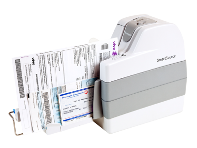
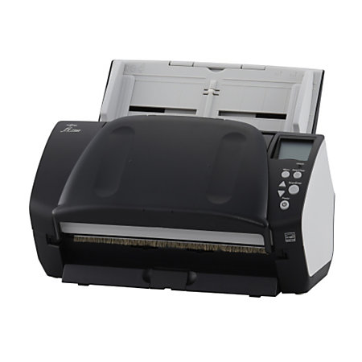

Scanner Recommendations
Select IndustryCanon CR-190 and CR-80
Check scanner that works well for check size coupons, personal checks, and business size checks. Popular for Credit Union Loan Remittance Servicing, Bank AR Lockbox Automation (i.e. property management), and Remote Deposit Capture. The Ranger license is included when purchasing these scanners.
Card title
This is a longer card with supporting text below as a natural lead-in to additional content. This content is a little bit longer.
Last updated 3 mins ago
Card title
This card has supporting text below as a natural lead-in to additional content.
Last updated 3 mins ago
Burroughs SmartSource Adaptive
Ranger driven device that scans documents, coupons, and checks. This scanner has a MICR reader built in. Popular for Invoice-to-Cash AR Automation, and Bank AR Lockbox Automation (i.e. medical). This scanner does require the purchase of a Ranger license.

Fujitsu fi-7160 and fi-7180
TWAIN driven device that scans documents, coupons, and checks. Popular for Invoice-to-Cash AR Automation, and Bank AR Lockbox Automation (i.e. medical).
